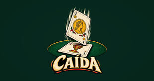

Los cantos
Los cantos son combinaciones de tres cartas que se tienen en la mano. Cada jugador los dice antes de empezar a lanzar cartas, y cada uno suma sus puntos.
| Canto | Cartas necesarias | Puntos |
|---|---|---|
| Caida | golpe a la carta al oponete anterior de su carta lanzada | cartas del 1-7 1 punto carta de 10 2 puntos carta de 11 3 puntos carta de 12 4 puntos |
| Ronda | 2 cartas iguales y 1 diferente | cartas del 1-7 1 punto carta de 10 2 puntos carta de 11 3 puntos carta de 12 4 puntos |
| Patrulla | Escalera (3 cartas seguidas) | 6 |
| Vigía | 2 cartas iguales y una que le sigue o le precede | 7 |
| Registro | 11, 12 y 1 | 8 |
| Tribilín | 3 cartas iguales | 24 |
El palo y el orden de las cartas no importan en ningún canto. Recuerda que la baraja no tiene 8 ni 9: después del 7 viene el 10.
Ronda
Dos cartas iguales y una distinta que no esté pegada a ellas. Es el canto más común y el que menos vale. Sus puntos dependen de la pareja: 1 punto si la pareja es del 1 al 7, 2 puntos si es de 10, 3 puntos si es de 11 y 4 puntos si es de 12. El ejemplo, una pareja de reyes con un 3, vale 4 puntos.
Si dos jugadores tienen Ronda en el mismo reparto, gana la de pareja más alta: una Ronda de 7 le gana a una de 4 aunque las dos valgan 1 punto. Si las parejas son del mismo valor, gana el jugador más cercano al echador. La carta suelta no desempata.
Patrulla
Tres cartas seguidas en el orden de la baraja: 1-2-3, 4-5-6 o 5-6-7, por ejemplo. Como no hay 8 ni 9, también son Patrulla 6-7-10, 7-10-11 y 10-11-12. Vale 6 puntos.
Entre dos Patrullas gana la que tiene la carta más alta de su secuencia: 4-5-6 le gana a 1-2-3. Si las dos terminan en la misma carta, decide la cercanía al echador..
Vigía
Dos cartas iguales y una tercera que va justo antes o justo después de ellas: 1-1-2, 1-2-2 o 6-6-5, por ejemplo. También 7-7-10, porque el 10 va después del 7. Vale 7 puntos, y por tener pareja le gana a la Ronda: una mano así nunca cuenta como Ronda.
Entre dos Vigías gana la de pareja más alta; la carta suelta no desempata, así que 4-4-3 y 4-4-5 empatan y decide la cercanía al echador.
Registro
Exactamente el 11, el 12 y el 1, de cualquier palo. Es el canto más alto de los de siempre: vale 8 puntos. Si dos jugadores lo tienen, gana el más cercano al echador.
Tribilín
Es el canto más valioso, y también el más raro. Tres cartas iguales, cualquiera que sea su valor, valen 24 puntos. Si dos jugadores tienen Tribilín en el mismo reparto, gana el que tenga la carta más alta: un Tribilín de 12 le gana a uno de 10 aunque los dos valgan 24 puntos. Si las tres cartas son del mismo valor, gana el jugador más cercano al echador.
Jerarquía y cobro
La jerarquía sigue a los puntos: Casa Grande, Casa Chica, Registríco, Registro, Vigía, Patrulla, Tribilín y Ronda. Si en un mismo reparto varios jugadores tienen canto, solo cobra el de mayor jerarquía, cuando su dueño tira la tercera carta. Los demás no cobran nada. Si dos cantos son del mismo tipo, se desempata como se explicó en cada uno y, si siguen empatados, gana el jugador más cercano al echador en el orden del juego.
Pedir canto
Si con tu canto llegas a 24 puntos, el juego lo pide solo al empezar tu turno, con tus tres cartas en la mano. Entonces los rivales responden: si ninguno tiene canto, cobras y ganas la partida en el acto, sin seguir repartiendo, y todos ven tus tres cartas. Si alguno tiene canto, aunque valga menos, la partida sigue como si nada, porque ese canto todavía podría ganarle al tuyo. En parejas solo cuentan los rivales, no tu compañero. Cuando la partida sigue, pedir canto no revela tus cartas ni quién tiene canto: solo que hay canto en la mesa.
Caída mata canto
Con esta opción, el canto queda pendiente hasta que su dueño tira sus tres cartas. El jugador que le sigue tiene una oportunidad: si en su siguiente jugada le da caída, el canto se anula; si no, se cobra en ese momento. Si se reparte o se acaba el ciclo antes de que el siguiente juegue, el canto se cobra. Si anulan el canto que iba ganando, cobra el canto que sigue en la jerarquía, siempre que no lo anulen también. En esta variante no existe el pedir canto.
Los cantos en modo Experto
En Experto el juego no canta por ti: tienes que anunciar tu canto con el botón "Cantar", eligiendo su tipo, en tu turno y mientras tienes las tres cartas en la mano. Un canto que no anuncias no existe: no compite, no cobra y no se pide. Anunciar un canto que no tienes, o uno distinto o menor que el real, resta 1 punto. El pedir canto no tiene botón: si anuncias bien un canto que te lleva a 24, se pide solo. Si no llega, solo se anuncia, y si te equivocas, lo sabes al anunciarlo, nunca antes.
Si la partida tiene Viveza, Cantar también ofrece Canto falso una vez por ciclo. Solo admite tipos habilitados, no sirve para el Tribilín si mata partida y nunca se pide: si un canto que llevaría a su dueño a 24 no se pide, es falso a la vista de todos. Un rival puede acusarlo hasta la primera jugada de la mano siguiente. Descubrirlo resta 1 a su dueño, retira lo cobrado por ese canto y deja competir al siguiente. Acusar uno verdadero resta 1 a quien acusa y no revela sus cartas.